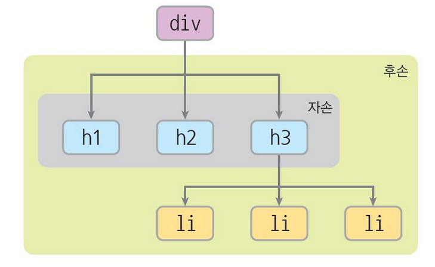

스타일을 적용할 대상이 하나 이상인 경우에 사용하는 선택자
후손descendant 선택자 : 해당 요소 아래에 있는 모든 하위 요소들을 대상으로 하는 선택자
자손child 선택자 : 해당 요소 직계 아래에 있는 하위 요소들을 대상으로 하는 선택자
그룹 선택자 : 여러 선택자를 혼합해서 요소들을 지정할때 사용하는 선택자
인접형제선택자: n번만 이라고 생각하면 된다
일반형제선택자 : n번이후 전부다 라고 생각하면된다
특정 태그에 미리 정의된 선택자를 부르는 말
동적의사 클래스 선택자 : 마우스 이벤트에 의해 스타일을 다르게 적용하고 싶을때 사용하는 선택자
구글로이동 네이버로이동상태의사 클래스 선택자 : 폼의 상태에 따라 스타일을 다르게 적용하고 싶을때 사용하는 선택자
구조적 의사 클래스 선택자 : html 요소의 계층적 구조에서 특정 위치에 있는 요소를 선택할때 사용하는 선택자
특정 태그에 미리 정의된 선택자를 부르는 말